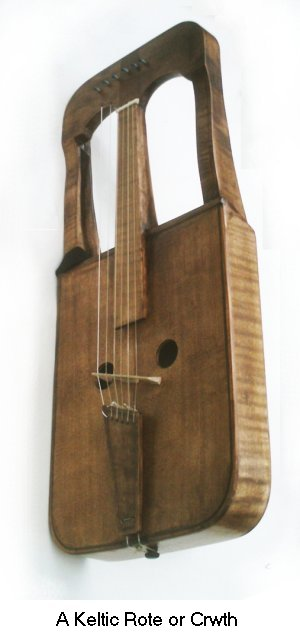

Gandin
Now that Queen Isolt had put
Brangaene to the strongest test,
finding her always loyal and steady
and her intentions true and faultless
in every way and situation
as though assayed in the crucible
and found to be pure gold,
from this time on the two of them
were so devoted to each other
both in heart and in mind
that never again was any concern
sufficient to divide them.
Now they lived in mind and heart
at peace with one another.
Brangaene liked her place at court,
the courtiers all sang her praises, 12950
and she was on good terms with them,
ill-disposed toward no one
openly or behind the scenes.
She enjoyed full confidence
with both the king and queen—
nothing happened in the chamber
that Brangaene did not know about.
She was most conscientious
in her service to Isolt,
attending to her every wish
involving Tristan, her amis.
They did this so discreetly
that no one at any time
had even slight suspicions.
Nobody took any notice
of their behavior or conversations
or any other of their doings,
since no one thought to do so.
They were happy and unmolested
as two lovers should be
whose time and situation
afford them everything they want—
now both amie and amis
could practice all their skills
in the hunt and chase for love.
Many times, every day,
their glances interlocked
with significant expressions
in public and in company,
where glances often serve
to exchange intimacies
and make secret assignations
between lovers concerning love.
They kept it up, night and day,
with complete impunity.
They were uninhibited
as to what they said or did
whether strolling about together,
seated or standing somewhere.
When they chanced to converse
in the presence of others,
they had learned to insert
codewords into what they said.
Any who could read these signals
might see the golden weft of love
shining in their belt of talk.
And still no one supposed
that what they said or what they did
hid any force such as love,
considering the comradeship 13000
so well known to everyone,
binding Marke and Tristan.
With this bond they bought their cover,
under it they hid their love-game,
and Passion used it to fool
the senses of many a heart
that understood nothing at all
of how their love subsisted.
Love, for them, was good and pure.
All their senses, their intentions,
accorded easily one to one.
Yes and yes, no and no,
yes and no, no and yes—
there was none of that for them.
No discord divided them,
being each to each as they were.
So it was that these two lovers
spun the lovely hours out
with one diversion or another.
Now and then they were happy,
then again at times contentious,
as love will have it between lovers:
deep within their hearts it breeds
comfort along with anguish,
misery and want with joy.
Tristan and his mistress Isolt
could not always arrange
the situation to their desires,
as was their need. Thus
they were both sad and joyful.
On some occasions also,
anger might blaze between them,
although, I say, without hate.
If there are any who would claim
that anger is incompatible
with affections such as theirs,
I take it as a certain sign
that those who do have never loved,
since that is the very mark of Passion—
with anger she inflames lovers
to raise the heat of their spirits.
While anger may pain them deeply,
soon devotion reconciles them,
renewing their love once again,
which increases their devotion.
But how they come to be at odds
and then make up without help,
you have often heard tell.
Lovers who have every chance
to enjoy each other's company 13050
often tend to look about
and fear that someone else
is more attractive than themselves.
From such a petty jealousy
comes an angry explosion,
and out of such a trifle
a reunion all the sweeter.
This is all just part of it,
not something you can blame them for.
Thus love ought to deepen,
freshen and renew itself,
and rekindle loyalties.
Love can age and decline,
grow cooler and even cold,
unless it has some fire.
When anger is extinguished,
love fails to grow green again.
When even a small spark of ire
flashes between partners,
devotion rises to make peace,
ever fresh and anew.
Thus is devotion renewed,
purifying love like gold.
Just so did Tristan and Isolt
pass the hours in love and pain.
Pleasure and pain came and went
constantly between them,
but still without deep concern.
The two of them had as yet
none of that anguish
resulting from disaster
that searches the heart's depths.
They kept the secret of their affair,
anxiously concealing
even its concealment.
The longer this succeeded,
the bolder they became,
confident and free.
Isolt the new queen
enjoyed the affections
of the land and its people.
Just so for this people and land
had Tristan become a legend.
His name was knows everywhere,
spoken with great respect
throughout the whole kingdom.
Tristan was ambitious.
He practiced constantly
at refining his martial skills.
He spend every free day 13100
at the art of falconry,
and rode to the chase and hunt
according to the season.
Then, one day, a ship put in
at Marke's harbor in Curnewal.
A knight debarked on the landing,
a noble baron of Irlant,
whose name was Gandin.
He was courtly and powerful,
and so manly of stature
that in all of Irlant
his manhood was celebrated.
He wore the splendid raiment
of handsome knighthood
and rode masterfully
straight up to Marke's court
unarmed with either shield or lance.
Tossed across his back he carried
a pouch, which, although not large,
was elegantly ornamented
with gold and precious stones
intricately woven.
He rode up to the palace,
dismounted, and strode in,
making proper salutation
to Marke and Isolt.
As her favored and trusted knight
he had often had occasion
to act in her service.
He came now from Irlant
to Curnewal for her sake.
She recognized him at once—
deu sal, messire Gandin!
she exclaimed, courteously.
merzi,
said Gandin. bele Isolt,
beauty more beautiful than gold
in the eyes of Gandin!
Isolt leaned over to whisper
to the king who this was.
Marke's curiosity
was strongly aroused
by the pouch this man wore.
Others of the court,
each and every one,
took special notice of it.
Marke, however, attended first
to protocol and ceremony,
in accordance with his own honor
as well as with Isolt's request.
She had particularly asked 13150
that he show every respect
to this her fellow countryman,
which the king was pleased to do.
He seated the guest next to him
and made polite inquiries
about his country and his people,
their ladies and courtly customs.
When the feast had been prepared
and the fingerbowl, being passed,
came in turn to him at table,
he was invited repeatedly
to lay aside the fine rote
he carried slung on his shoulder,
but he could not be persuaded.
Gracefully, the king and queen
tried to disregard the matter,
but many others took his refusal
as impolite and discourteous.
Nor was this event passed over lightly—
the courtiers, among themselves,
began to mock and laugh at him,
dubbing him Knight of the Rote,
the Lord who hauled his Load.
But he paid no attention to them.
He had taken his place at table
next to Marke for the dinner.
He ate and drank to satisfaction.
When the boards had been removed,
he rose and went to take a place
among Marke's followers,
who took him into their company,
regaling him as a comrade
with much local talk and gossip.
The king, aware of his dignity,
Marke, the exemplar of virtue,
asked his guest, before all present,
if he was skilled at his instrument,
that he might entertain them all
with a sample of his playing.
No, My Lord,
the guest said,
unless I know for what reward.
—Sir, what do you mean by that?
If you want anything I have,
that, I say, is done—
let us hear what you can do,
and I will give you what you ask.
So be it,
replied the Irlanter.
He then performed a lay for them
that eased all their cares.
The king at once requested 13200
that he play another like it.
The clever trickster laughed
silently to himself.
For the right payoff,
he gloated,
yes, I'll play my tune for you,
and performed another twice as well.
And when the second one was finished,
Gandin stood before the king,
with his rote in his hand.
Sir,
he said, now remember
what you have promised me.
Of course,
the king said, gladly.
Tell me, what is it you would have?
Isolt!
he snarled. Hand her over!
Friend,
said Marke, with that exception,
whatever else you want is yours.
But what you ask cannot be.
Indeed, Sire,
Gandin replied,
I want nothing, great or small,
except Isolt, and her alone.
That shall not be,
said the king.
—Sire, so you do not intend
to keep the truth of your word?
Once it is widely known
that your oaths are worthless,
you have no right, from that moment,
to be king of any land.
Read through the laws of royalty—
if you find there no such clause,
I'll give up my claim at once.
If you, or anyone, denies
the promise that you made to me,
I'll pursue my legal rights
against you or your witness,
however your court may judge.
I put my life on the line
in martial trial by combat
unless my rights are respected.
Whoever you will, or you yourself,
shall ride into the ring with me.
There and then I shall prove
that the lovely Isolt belongs to me.
The king looked this way and that,
considering first one or another,
to see if he had anyone
who would dare to fight this man.
But no one there was prepared
to cast his life into the balance,
nor did Marke himself relish
defending Isolt in combat 13250
against Gandin, so powerful,
so manly and courageous.
No one rose to meet the challenge.
It so happened that Sir Tristan
was tracking game in the forest.
He would have kept up the pursuit
rather than return to court,
except that somewhere on the way
he chanced to hear the fateful news
that she had been surrendered.
And indeed, such was the case.
Gandin had seized the beauty
despite her tears of desperation
and anguished cries of lament,
abducting her from the court
to his own rich pavilion
which in conspicuous luxury
had been set up near the harbor.
There it was he took the queen
to sit with him and await
the next rising of the tide,
which would again lift his ship
on its flood and current
from where it lay on the beach.
Meanwhile Tristan had reached home
and heard more of the details
about the trick with the rote.
Immediately he remounted,
taking his harp into his hand.
He headed off at a gallop
until he approached the harbor.
With quick guile he turned aside
into a thicket, tethering
his horse there to a branch,
on which he also hung his sword.
Snatching up the harp,
he ran to the great tent
where he found the baron,
in whose embrace sat
his desolate victim,
Isolt, weeping hotly,
whom he was trying to comfort,
although without any effect
until her eye fell on the man
who came carrying a harp.
Gandin greeted him courteously—
de te saut, beas harpiers!
—merzi, gentil schevaliers!
Sir, I have come in haste,
replied Tristan, to find you, 13300
since I have just recently
been told that you are from Irlant.
Sir, that is my home also.
Upon your honor, take me along—
with you back home to Irlant!
Comrade, that I surely will,
the real Irlanter promised.
Now have a seat, play your harp.
If you can soothe this lady
and make her leave off weeping,
I'll award you the finest raiment
to be found in this pavilion.
Sir, I can,
boasted Tristan,
and I am confident of this,
that if it isn't such a grief
that in response to no man's playing
would she ever stop her crying,
now she will control herself.
Right away he set to work,
beginning at once to perform
a lay of beautiful sweetness
that went straight to Isolt's heart,
sending all her thoughts afar,
such that her sobs subsided
into memories of her amis.
By the time the lay had ended
the tide had turned, and the water
had risen to refloat the ship.
There came a hail from the crew
echoing across the harbor—
Ho, sir, come aboard!
You know, if that Sir Tristan
catches you there on land,
we'll have a bad time of it.
He holds firmly in his grasp
both this land and its people.
And he himself, so they say,
is a man of great boldness,
fearless and courageous—
he could make it hard on you!
Such talk didn't please Gandin.
Much annoyed, he shouted back,
Well, now, I'll be damned
if just for that I'll turn tail
and be in a hurry to go on board.
Fellow, play us another one—
do that lay about Dido.
The way you play is so fine
that I would love to hear it.
So harp away—for my lady! 13350
I'll show my appreciation
by taking you and her with me,
and giving you, right now,
what I promised you, an outfit,
the very finest that I own.
That's a deal,
said Tristan,
and as minstrel began again.
Now he strummed the strings
of his harp so sweetly
that Gandin could hardly help
but pay rapt attention,
seeing that Isolt also
was much taken with the music.
When Tristan was done with the lay,
Gandin laid hold of the queen,
intending to go aboard his ship.
But the tide was now in flood,
and the water before the gangway
so deep that for the moment
no one could get aboard
unless he had a very tall horse.
What to do?
wondered Gandin.
How shall my lady reach the ship?
Well, My Lord,
offered the minstrel,
since you have assured me
that you will carry me with you,
I have no reason to leave
anything here in Curnewal.
I have nearby a tall horse,
quite big enough, I'm sure,
that with it I will have no trouble
in conveying your lady friend
right across to the gangway
without a drop touching her.
My good minstrel,
Gandin said,
go get your horse, and hurry!
Then you shall have the clothes I promised.
Tristan brought his mount at once,
and as soon as he arrived with it,
slung his harp over his back.
Now, My Lord of Irlant,
he said,
hand the lady up to me—
I'll take her before me on the saddle.
Nay, minstrel,
replied Gandin.
You are not to touch her.
I will take her across myself.
Sir, no!
exclaimed Isolt.
Stop wasting all this talk
of not letting him touch me—
of this at least you can be sure 13400
I'm never going to get aboard
if this minstrel doesn't take me.
Gandin lifted her up to Tristan.
Comrade, take care,
he warned,
get her across safe and sound,
and you shall have your reward.
Once he had Isolt with him,
he spurred the horse some paces away.
When Gandin saw this maneuver,
he called out roughly after him,
hey, you fool, what are you doing?
Nay,
he laughed, Gandin's the fool!
the dunce cap, friend, is now on you—
what you defrauded Marke of
with your deceitful rote-playing,
I've won back with the harp.
You cheated first—now you're cheated!
Tristan has tracked you down
and caught up with you at last.
Friend, you do give high rewards—
I have here the finest item
of all I saw in your tent!
Tristan turned and rode away.
Gandin, filled with chagrin,
could only feel much downcast.
Both shame and his loss
caused him severe regret.
He sailed back across the sea
ignominiously.
Those other two travelers,
Tristan and Isolt, rode on.
Whether on their way they stopped
to take pleasure with each other
or perhaps to rest in the flowers,
I prefer not to guess.
I should now refrain from guessing
and personal conjectures.
Tristan brought Isolt back
to his uncle, King Marke,
and scolded him thoroughly.
Sire,
he said, before Christ,
so dear to you is the queen
that you commit the greatest folly
in thoughtlessly handing her over
for mere harp- or rote-playing.
The whole world may laugh at you—
who has ever seen a queen
bartered off for a tune?
Remember this in the future
and guard my lady more carefully.
13450